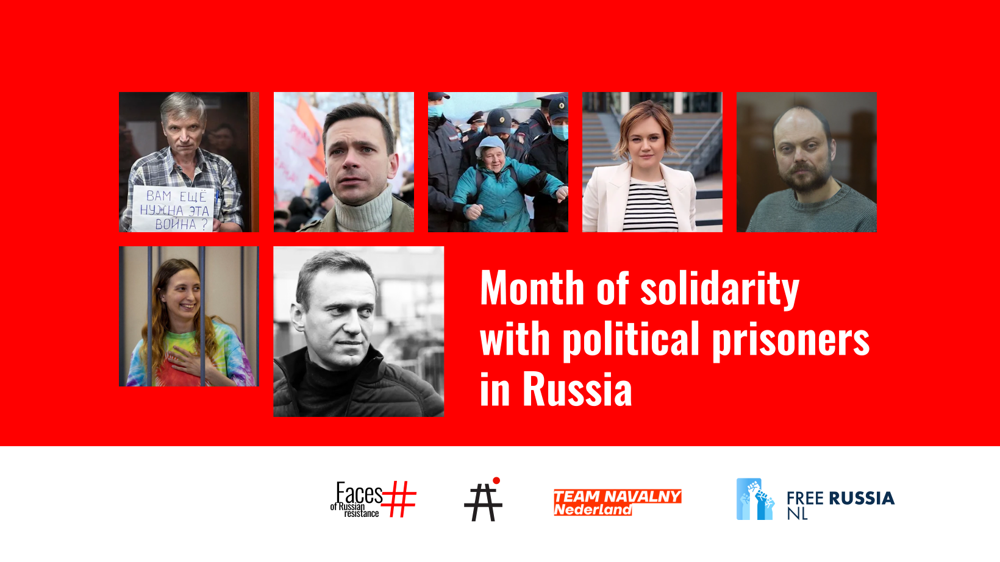

Month of Solidarity with Political Prisoners

"Month of Solidarity with Political Prisoners" is a dynamic initiative aimed at exposing the suppression of democracy and human rights in Russia under Putin's regime. Featuring exhibitions, discussions, and educational sessions in Amsterdam and The Hague, held from 1 June until 6 July, this program seeks to mobilise international support for Russian political prisoners. It addresses decades of political persecution and opposes state propaganda by showcasing the ongoing resistance in Russia and among the diaspora. By joining, participants can help advance transparency, justice, and democratic governance in Russia, challenging the authoritarian shadow cast by Putin's government.
Partners:
- Free Russia NL: Originating as a grassroots initiative, this foundation has evolved into a pivotal organisation that advocates for Russian-speaking democratic activists in the Netherlands, providing essential humanitarian and informational support.
- Faces of Russian Resistance: Documents and exhibits the lives and sacrifices of Russians who have dared to stand against tyranny, emphasising their stories to inspire global action.
- Team Navalny Netherlands: Focuses on sustaining the legacy of Alexei Navalny through advocacy for sanctions and support for Russian expatriates.
- Avtozak LIVE: Continues to track and report on political persecution in Russia, supporting legal defence efforts and maintaining a public database of injustices.
Program Highlights:
- Exhibition "Faces of Russian Resistance" at Beursplein, Amsterdam and Spuiplein, The Hague: An in-depth look at individuals who have been imprisoned for their opposition to the regime, featuring multimedia presentations and personal stories.
- Exhibition "Navalny" at Spuiplein, The Hague and Beursplein, Amsterdam: A photographic journey through Navalny's activism and the broader political landscape of resistance in Russia.
- Public Panel on "Advocacy and International Cooperation": Features human rights experts from Amnesty International and other NGOs discussing strategies to combat political repression.
- The Future of the Russian Orthodox Church: A critical examination of the Church's role in supporting the state's agenda, featuring dissenting voices from within the religious community.
- Public session on Radical protest in conditions of war and dictatorship, looking further in resistance tactics.
- Closed Session with Dutch Politicians: A strategy session on how the Netherlands can effectively support Russian democratic movements.
- Seminars at local universities: These sessions, led by renowned human rights lawyers and academics, will educate students and professionals on the nuances of human rights advocacy.
- Book Launch: "Voices of Russian Resistance" offers narratives from the front lines of resistance, compiled and introduced by prominent journalist Ilya Azar.
- Documentaries such as "Navalny" and narrative films focusing on personal stories of resistance, followed by discussions with filmmakers and activists.
- Theatre readings including "Finist, The Bright Falcon” by Svetlana Petriychuk, exploring themes of freedom and resilience.